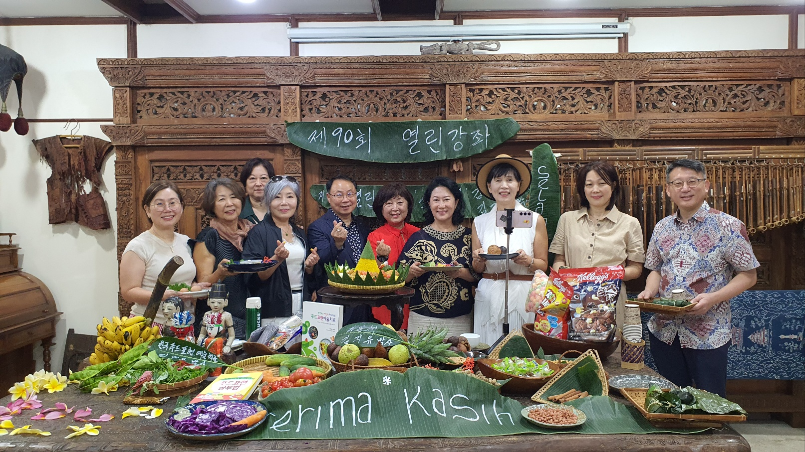
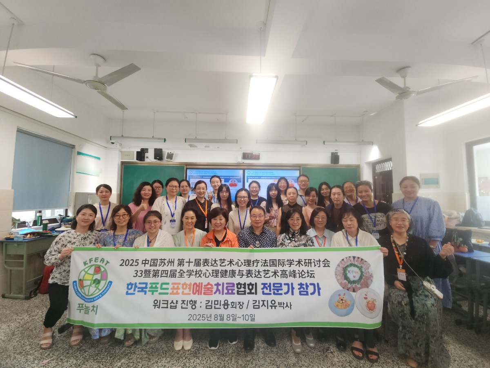
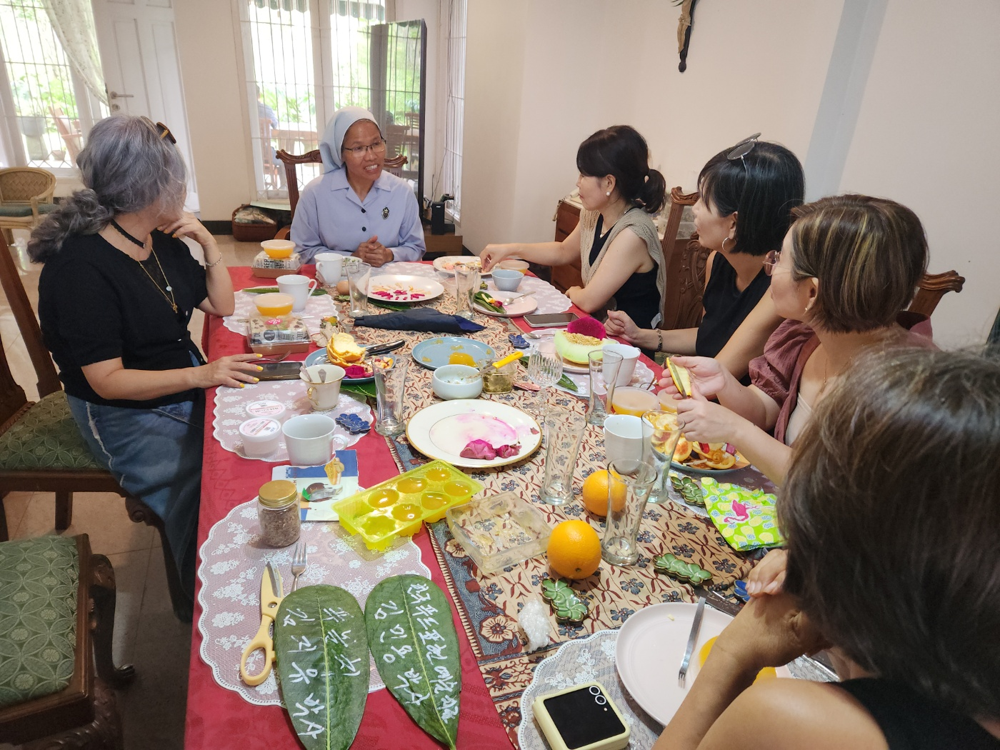
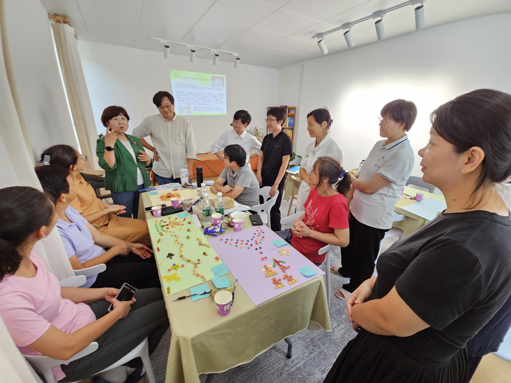
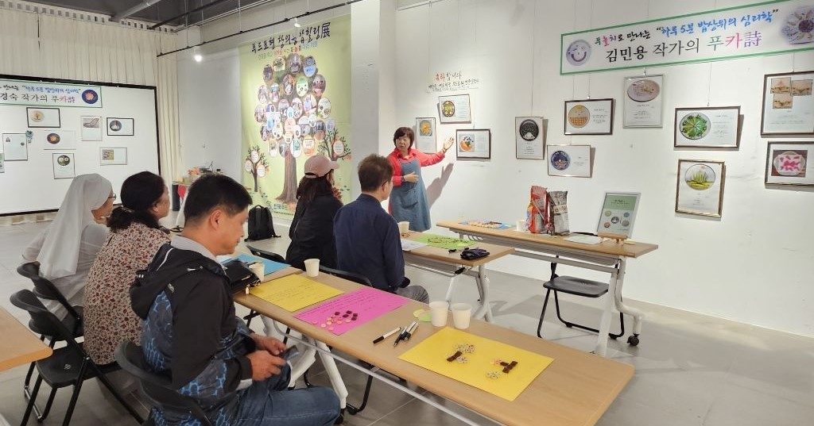

한인니문화연구원의 초대로 함께 하는 푸드표현예술치료. K-FEAT협회는 국경을 초월해 치유를 나누는 단체입니다. 배움은 나눌 때 더 깊어집니다.

중국국제표현예술치료학회 초대로 참여했던 푸놀치 워크숍. K-FEAT협회는 함께 할 때 더 큰 기적을 만듭니다. 재능은 나눔을 통해 빛납니다. 중국사람들의 뜨거운 반응에 감사합니다.

자카르타 양로원에 근무하시는 수녀님과 함께. 작은 나눔이 큰 변화를 만듭니다. K-FEAT협회는 세상과 치유를 나눕니다

중국 광조우 상담센터에서의 재능기부. 마음을 나누는 순간, 치유가 시작됩니다. 푸놀치는 국경을 넘어 연결됩니다. 함께하는 나눔이 지구촌 공동체를 살립니다.

K-FEAT협회 지부장님들과 함께하는 푸카시 전시회. 우리는 사랑을 실천하는 단체입니다. 나눔은 또 다른 성장의 시작입니다. K-FEAT협회는 세상을 향한 따뜻한 사랑을 실천합니다.